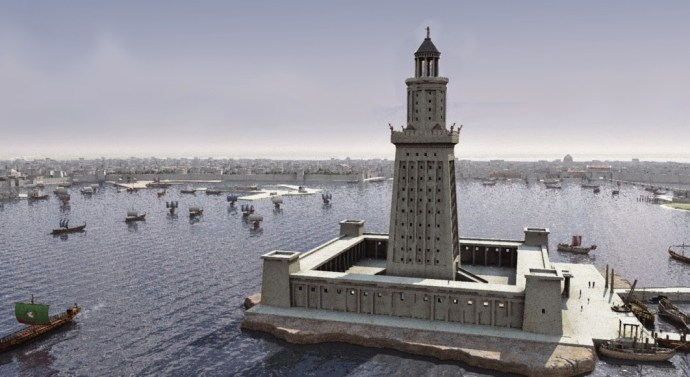
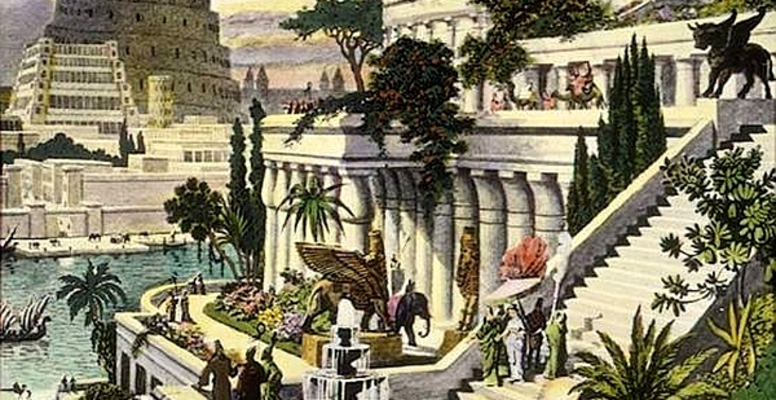
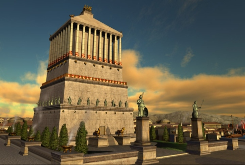
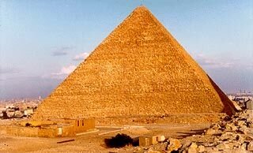
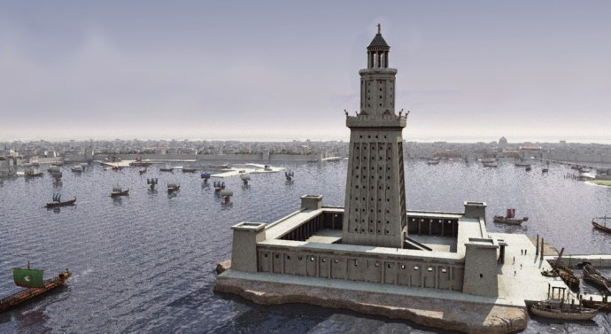
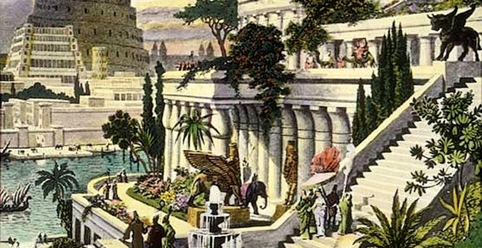
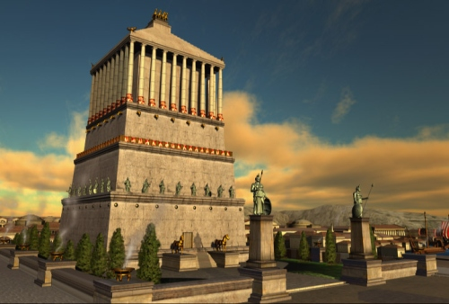
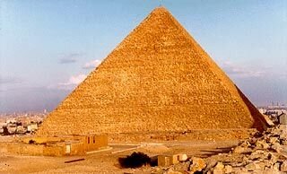

Numarul 7 a jucat în istorie și în mitologie un rol însemnat - câteva popoare
ale Orientului antic îi atribuiau chiar o forță mistică; această credință a
fost preluată, ca multe alte tradiții, de vechii greci, în istoria cărora
vom găsi printre altele expediția Celor șapte împotriva Terrei
, pe Cei șapte înțelepți
, de asemenea Cele șapte minuni
ale lumii antice
. Aceasta din urmă nu era o creație exclusiv
greaca - Piramida cea mare, de exemplu, a fost proiectată și
construită de egipteni (care i-au precedat pe greci în câteva sectoare
importante, cum este cel al gândirii matematice), iar grădinile suspendate
din Babilon au reprezentat o îmbinare excepțională a arhitecturii și
tehnicii irigațiilor practicate în Mesopotamia.
Este limpede, prin urmare, ca nu poate fi vorba de minuni
În sensul mitic al terminologiei - așadar de realizări fantastice,
eventual atribuite unor forțe supranaturale; erau lucrări de arhitectură și
artă, ieșite din comun prin caracterul lor monumental-impunător și
realizarea la un înalt nivel artistic, reprezentând geniul demiurgic al
lumii antice. Spunem și astăzi despre un monument impresionant, demn de
admirat, este a opta minune a
lumii
.
 







Primul care a descris în ansamblu monumentele a fost Filon din Bizant (sf.
sec. III î.e.n.), dar textul său nu s-a păstrat decât într-o traducere
latinească târzie; Herodot, înainte de Filon, iar dupa Filon, alți autori
antici de prestigiu - printre care Diodor, Strabon, Vitruviu, Pausanias -
au dscris diferite monumente ca minuni ale lumii antice
,
totdeauna în număr de șapte. De-a lungul veacurilor, unele au fost
înlocuite - de pildă: zidurile Babilonului, prin Farul din Alexandria.
Selecția s-a definitivat foarte târziu (la înc. sec. XIX) fixându-se
asupra urmatoarelor șapte: Piramida lui Keops
(Kufu) de la Giseh, Gradinile suspendate ale Semiramidei din Babilon,
Templul Dianei (Artemisei) din Efes, Mormântul lui Mausol
din Halicarmas, Statuia lui Zeus din Olimpia, Farul din
Alexandria și Colosul din Rhodos.
Dintre aceste 7 monumente celebre ale antichității Piramida lui
Cheops (Piramida cea mare) întrunește trei însușiri menite să
trezească în mod deosebit interesul: este cel mai vechi, este
singurul care a supraviețuit până astăzi și de la el se leagă o seamă
de chestiuni controversate care, de-a lungul vremii, și mai ales în
ultimii 150 de ani, au dat naștere unor speculații hazardate și unor
dispute științifice adesea înverșunate.